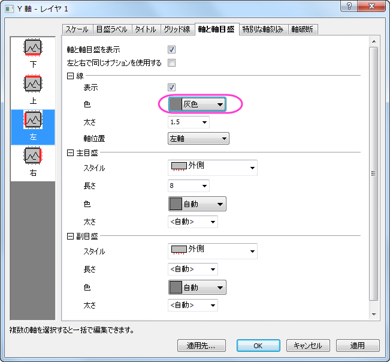
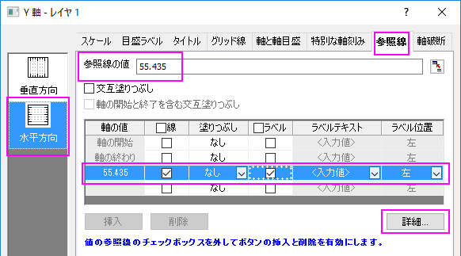

I型のボックスチャート
i-shaped-Box
サマリー
Originのボックスチャートは高度な編集が可能です。このチュートリアルでは、データポイントの重ねたI型のボックスチャートとカスタムパーセンタイルの作図方法を示します。

必要なOriginのバージョン: Origin 2015 SR0以降
学習する項目
- ボックスチャートを編集する
- ボックスチャートの軸を編集する
- 線図オブジェクトをボックスチャートに追加
データポイント付きのI型ボックスチャートの作図方法
このチュートリアルは、チュートリアルデータプロジェクト（<Origin EXE フォルダ>\Samples\TutorialData.opj）と関連しています。
- チュートリアルデータプロジェクトを開き、I-Shaped Boxフォルダにブラウズします。
- Book1のSheet1をアクティブにします。A列からK列を選択して、作図>統計：ボックスを選択します。次に、凡例をクリックして選択し、Deleteキーを押して削除します。
- ボックスをダブルクリックして、作図の詳細（プロット属性）ダイアログを開きます。ボックスチャートタブを開き、種類をボックス+点列 重複を選択します。形状をI型にし、ヒゲの範囲を最大-最小にセットします。また、外れ値のチェックもつけます。
- データタブをクリックし、データの幅(%)を0にします。
- OKをクリックして、設定を適用します。
ボックスのスタイルの詳細編集
- ボックスをダブルクリックして、作図の詳細（プロット属性）ダイアログを開きます。グラフグループタブを開き、境界色の推移をなしにします。
- シンボルタブを開き、シンボルの形状を正方形で内部を空白にし、境界の色と塗りつぶしの色を15 橙色にします。線の透過率に準じるのチェックを外してから、透過率を80％に変更します。
- パターンタブを開き、縁の色を紫にし、幅を1.5に設定します。
- 間隔タブをクリックし、ボックス間の間隔(%)を0にします。
- パーセンタイルタブを開き、以下の図のように形式の設定を行い、<P, 100-p>でのカスタムパーセンタイルのチェックをつけます。
- 線タブを開き、以下のように変更します。
- OKをクリックして、設定を適用します。
軸の詳細編集
- X 軸上でダブルクリックして軸ダイアログを開きます。スケールタブを開き、副目盛のカウントを1にします。

- 目盛ラベルタブを開き、そのページ内のフォーマットタブを開きます。Ctrlキーを押しながら、左側パネルで下と左のアイコンを選択し、ラベルの色を黒に設定します。
- グリッド線タブを開き、左側パネルで垂直を選択してから副グリッド線を以下のように設定します。
- 軸と軸目盛タブを開き、左側パネルで上を選び、ページの上部にある軸と軸目盛の表示にチェックを付けます。
- Ctrlキーを押しながら左側パネルで上と下のアイコンを選択し、以下の図のように設定して適用をクリックします。
- Y 軸を編集するには、スケールタブで垂直アイコンを選択し、以下の設定を行います。
- タイトルタブを開き、テキストボックスにTemperature (\+(o)F) と入力します。
- グリッド線タブを開き、追加の線の反対にチェックを付けます。
- 軸と軸目盛タブを開き、線ノードの下にある色を灰色に設定します。
- 
- OK をクリックして、これらの設定を適用します。
平均値をマークする線の追加
- Book1のすべての列を選択します。グローバルな平均の値が計算され、ステータスバーに表示されます。
- グラフウィンドウをアクティブにして、メニューからグラフ操作：直線を追加を選択します。addlineダイアログで、下図のように設定します。
- グラフの空白部分で右クリックしてレイヤタイトルの追加/編集を選択します。Weather History for Boston, Fall (Sep, Oct, Nov)と入力します。
- 必要に応じて軸とレイヤタイトルを再配置します。
 | 軸ダイアログで指定したY値で水平線を引き場合には、2つの方法があります。
- グリッドタブを開き、左のパネルの垂直を選択して、追加の線の下にあるY=のテキストボックスにYの値を入力します。ここで、このオプションは線を追加するのみなので、この線にマークを付けるには、特別な目盛か簡単なテキストオブジェクトを追加する必要があります。

- 参照線のタブを開き、左のパネルの水平アイコンを選択して、 Y=55.435でラベル付き参照線を追加し、詳細ボタンをクリックしてこの線のスタイルを設定します。スタイルツールバーを使ってテキストラベルの色を変更できます。
- 
|